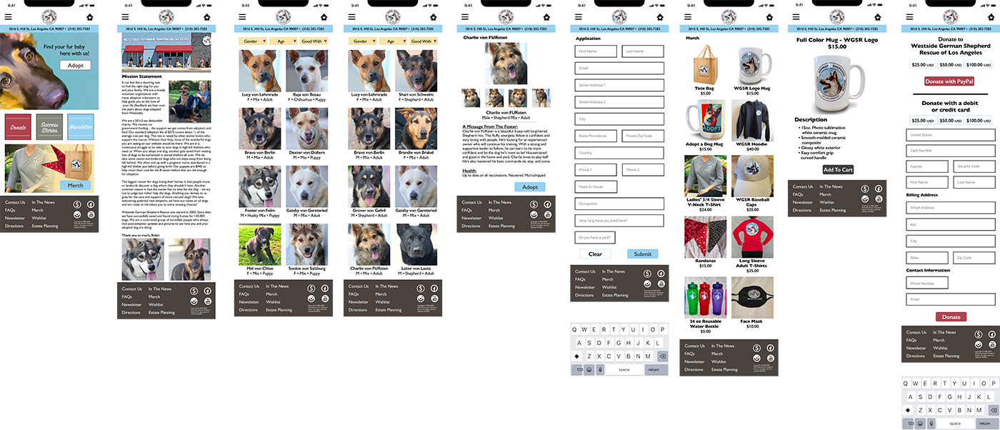
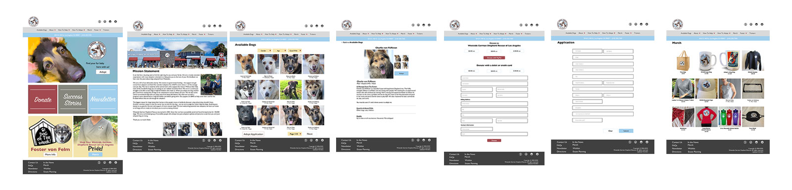

Overview
West Side German Shepherd Rescue's website needs a complete overhaul and look and feel to deliver a better user experience for it's customers.
The Team & Timeframe
The project time frame was a 2 week sprint.
- Madeline Lipkin, Lead UX Researcher
- Robert Harris, Lead Information Architect
- Belinda Miller, Lead Visual Designer
Tools & Methods Used
- Affinity Mapping
- User Interviews
- User Surveys
- Competitive & Comparative Analysis
- Miro
- Figma
- Adobe CC
- Usability Test
Problem
The Experience Should be Personable
Users need a personable experience to select an animal rescue in order to find a dog to add to their family. The user who will be going to WSGR's site to search for and adopt a dog needs to feel a level of trust and personal touch on website. At the moment the current site is very old and chaotic and it is not serving WSGR well as far as the image.
Solution Overview
How might we...?
How might we design an adoption website for West Side German Shepherd Rescue's customer? The challenge was to design and build a user-centered website for West Side German Shepherd Rescue that organized the wines in proper categories and provided navigation and search for the user to be able to easily find and purchase wines and have them delivered.
Approach
Seek Users Who Have or Are Adopting Dogs
Our approach to this project was to seek out users who have adopted dogs or are currently adopting dogs and ask them questions about their experience and sites that they used. We also looked at other adoption sites to get an idea of how the competitors sites look.
Activities & Deliverables
Hours of Reasearch, Architecture and Design
West Side German Shepherd Rescue's new website solution will provide its customers with the ability to search for a dog to adopt and submit the adoption application.
Research
Persona
Dog Lover Looking to Adopt a German Shepherd
Our persona - Carol Olsen - is the summary of the users that we researched who use Web sites to adopt dogs and plan to or have adopted dogs in the past.
1. User Interviews
By observing the participants within the context of buying wine at an, and during, I was able to question and observe how they order wine and why they use the method that they use - mobile phone. As people arrived over the 5 or 6 hours that we were gathered we talked about their favorite local wine stores and their sites and apps.
Interview Questions:
- 1. Tell me about your experience of finding and adopting your dog online.
- a. Website used
- b. Timeline (from first search to adoption)
- c. Adoption application process
- d. Retrieving dog
- What drew you to your dog specifically?
- Did you have any special considerations when searching for your dog? (e.g. good with cats/other dogs/kids, male/female, age, housebroken)
- Why did you use (website they answered in survey) over other websites?
- a. Was there anything that stood out to you as something the site did well?
- b. Was there anything that stood out to you as something the site did not do well?
- If you were to looking to adopt another dog, would you use this website again? Why?
- Have you ever volunteered with or donated to a shelter or rescue? How was that experience?
- Have you ever/would you ever consider hosting a foster dog? Elaborate.
2.User Survey
We created a survey and solicited parcipants to participate via social media platforms.
Data Gathered
- Accounts set up with their favorite local wine stores
- Delivery was preffered method of getting wine
- Site content was organized and searchable for users/customers
3. Affinity Mapping & Data Synthesis
By observing the participants within the context of buying wine at an, and during, I was able to question and observe how they order wine and why they use the method that they use - mobile phone. As people arrived over the 5 or 6 hours that we were gathered we talked about their favorite local wine stores and their sites and apps.
Data Gathered:

2. Competitive Analysis
Competitors Have Great Looking Websites
A quick search for dog rescue sites and one can see the stark difference between sheprescue.org and other dog rescue sites. We looked at a few but for the study I have only included two.
Design
Design for Search, Dog Bio and Adoption Application
Site Maps
Here is the new information architecture that we came up with based on the insights gathered. We eliminated a few pages that made no sense and consolidated that information into other pages.


User Flow
We created a user flow that expects to be able to search and/or go directly to the wine varietals, regions and coutries that the customer is looking for. If a user is signed up he/she can see the wines that they bought and repurchase it/them.
No matter what choice the user makes, they will be able now check out and complete their purchase online and select delivery to a selected address.

Visual Design
Let's Get Some Wireframes Done
The visual design incorporates all of the UI elements and functionality found in other e-commerce wine sites. We have incorporated search and faceted search to help users select wine by ratings, price, region and country.
Easily Find the Dog You Like and Apply to Adopt
We began this process with some low-fidelity sketches and wireframes and we quickly turned those in mid-fidelity wireframes. We began by ddesigning the mobile experience first and then designed the desktop expeience once we settled on the direction that we wanted to go in.
Mobile Version
Desktop Version
Results & Reflections
Fantastic Redesign with Future Improvements to Come
With a comeplete redesign of sheprescue.org we believe that we have improved the user experience for their customers. The site is no longer outdated and is better organized. The look and feel is clean and with consisten colors and typography.
We will continue working on the design by conducting usability testing.